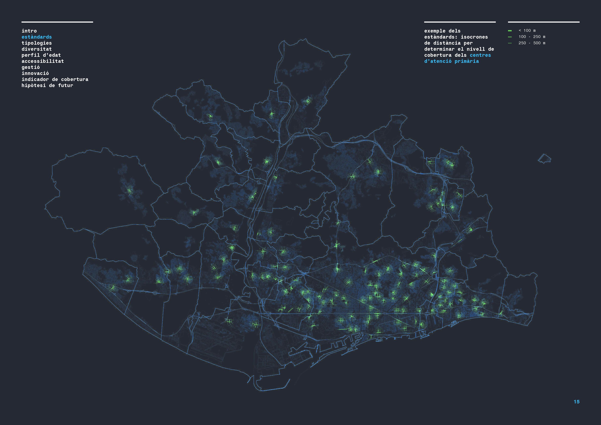
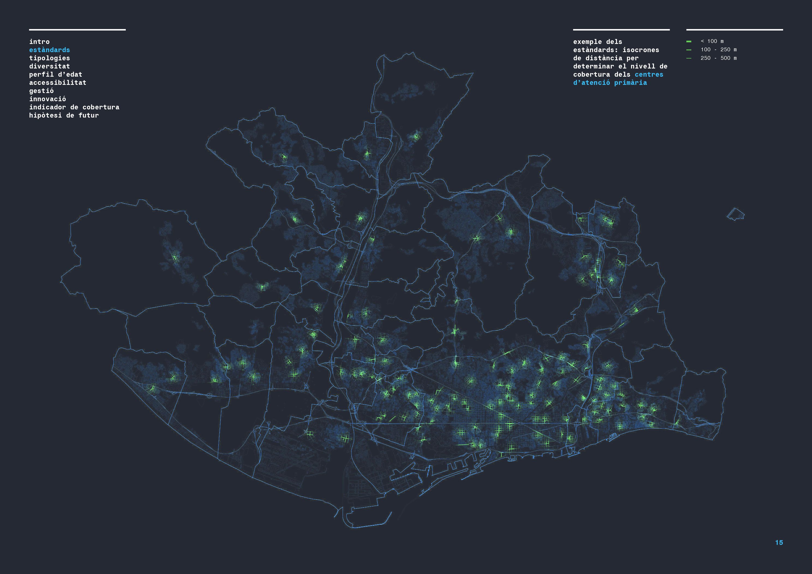
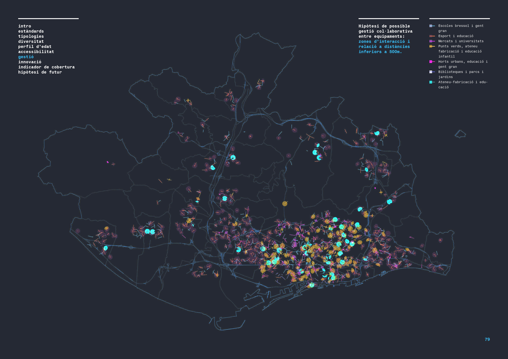
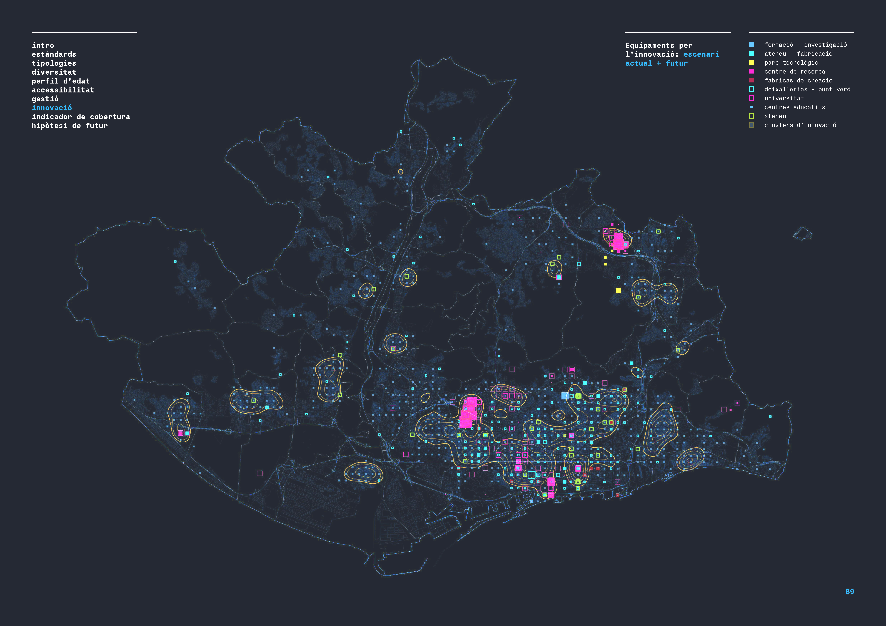

Is there a definition of standards for all equipment?


 

What is the level of diversity?
How accessible are the facilities from the public transport stations?

How are the facilities managed nowadays?
Which are the facilities that, nowadays, promote innovation?
Which is the level of coverage of each facility?